01
34 traffic signs, sorted by what they ask of the driver
Every sign is a simulator object with its own executable rule checker. The checker watches the closed-loop rollout and flags a violation the moment the ego vehicle breaks the rule — no human labelling required.
Speed
4Keep speed inside the signed limit, zone, or minimum.
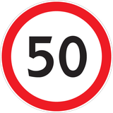
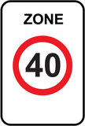
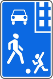
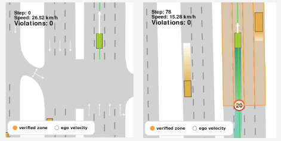
Priority
8Yield, stop, and give way at junctions and crossings.
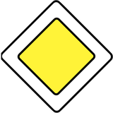
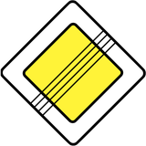
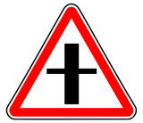
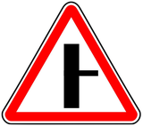
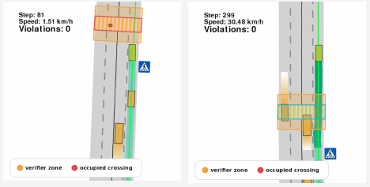
Routing
13Take only the permitted direction, turn, or branch.
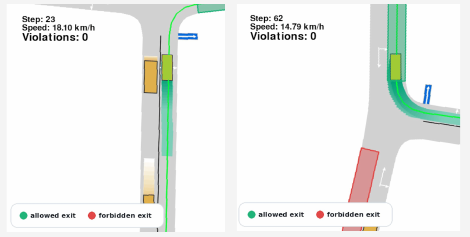
Obstacles & lanes
9Pass obstacles on the signed side and keep to permitted lanes.
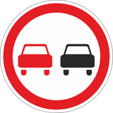
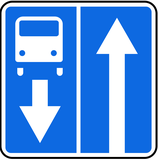
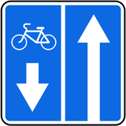
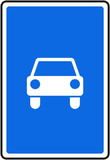
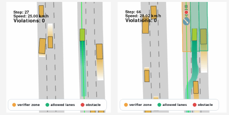